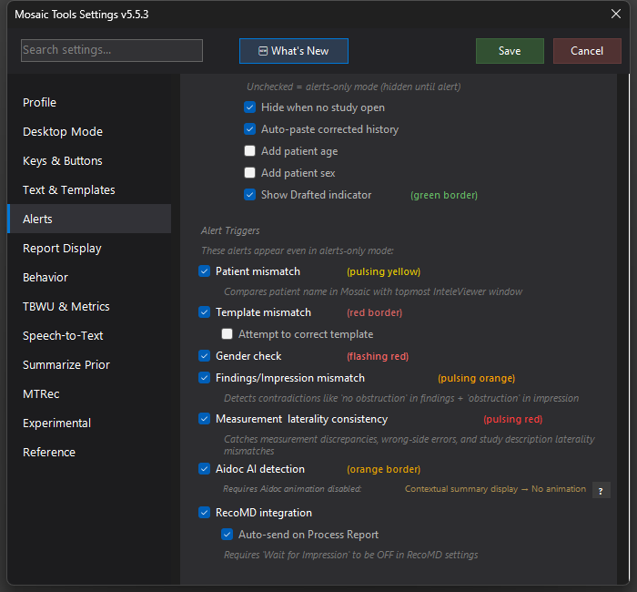

RadAI Impression legacy / deprecated
Legacy integration with the RadAI impression generator — being retired; MTRec and Mosaic's own impression generation cover the ground.

What it does
For workstations with RadAI installed, MosaicTools can drive it: the mappable RadAI Impression action generates and shows an AI impression, and Settings → Alerts → RadAI auto-insert on Process Report generates and inserts one automatically when you press Process Report.
Why it's deprecated
The integration is being retired. It only ever worked on workstations with the separate RadAI application installed, and the ground it covered is now handled inside MosaicTools and Mosaic itself — Mosaic generates the impression during Process Report, and MTRec adds guideline follow-up recommendations from verified tables with citations (see the MTRec pages).
If you have the auto-insert option enabled on a machine without RadAI, it does nothing; you can safely uncheck it. Expect the action and setting to disappear in a future release.